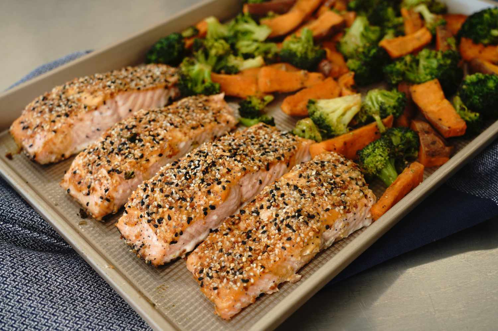

Sheet Pan Salmon

The Greatest Thing since Leftover Corn Chowder
Ingredients
- 2 medium sweet potatoes, sliced into 1/4-inch wedges
- 1 tablespoon olive oil
- ½ teaspoon kosher salt, divided
- cooking spray
- ¼ teaspoon ground black pepper, divided
- ¼ cup Dijon mustard
- 2 cloves garlic, minced
- 2 tablespoons honey
- ¼ teaspoon cayenne pepper
- 5 cups broccoli florets
- 4 (5 ounce) salmon fillets
- 2 tablespoons everything bagel seasoning
- 2 teaspoons soy sauce
Steps:
-
Preheat the oven to 425 degrees F (220 degrees C). Line a large, rimmed
baking sheet with foil and coat lightly with cooking spray.
-
Toss sweet potatoes with 2 teaspoons oil, 1/4 teaspoon salt, and 1/8
teaspoon pepper in medium bowl. Place on one half of the prepared baking sheet.
-
Bake in the preheated oven for 5 minutes.
-
While the potatoes are cooking, stir together Dijon, honey, and
cayenne in a small bowl. Toss broccoli with remaining oil, salt, and
pepper in a separate bowl.
-
Remove potatoes from the oven. Add salmon to the other half of the
baking sheet. Place 2 teaspoons of the mustard mixture on each salmon
filet; brush evenly to coat, then sprinkle evenly with bagel seasoning.
Add broccoli to the sweet potatoes. Return to the oven and bake until salmon
flakes easily with a fork and the veggies are golden, about 12 minutes.
-
Stir soy sauce into the remaining mustard mixture and drizzle over veggies.